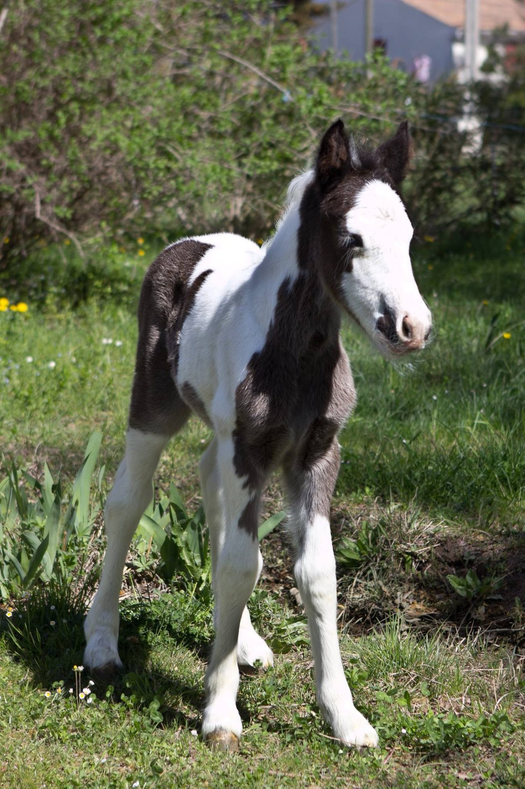
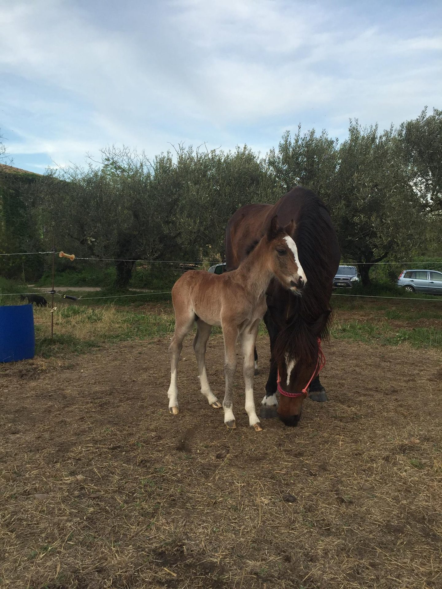
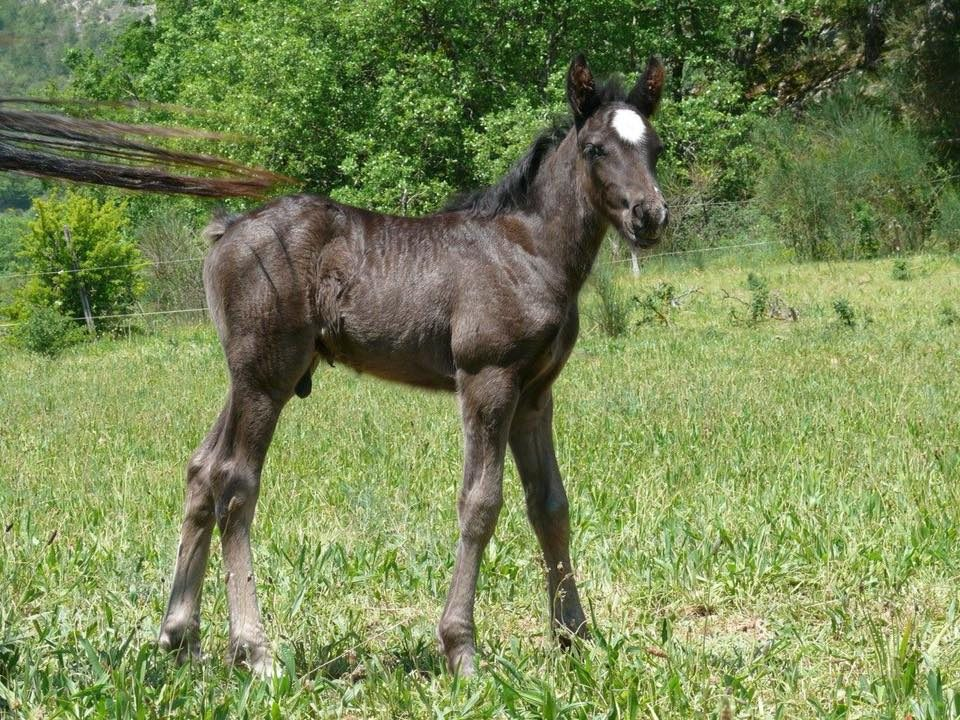
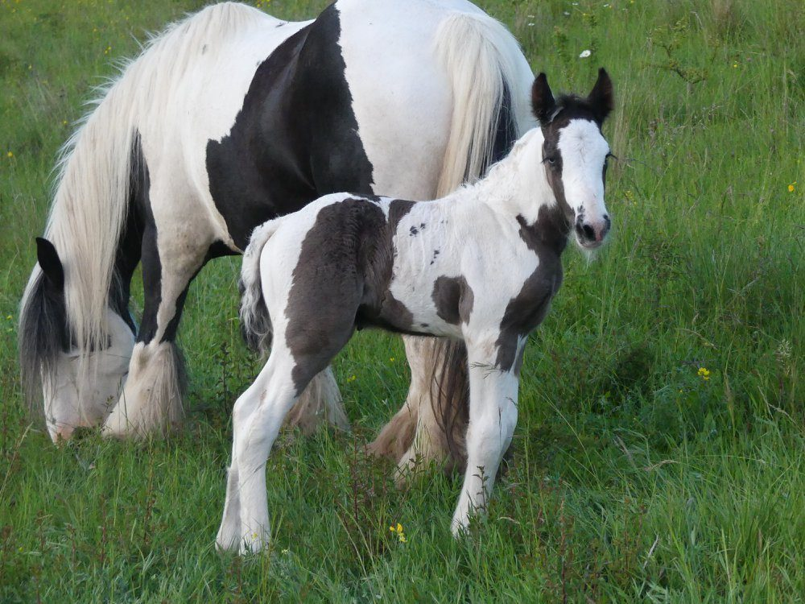
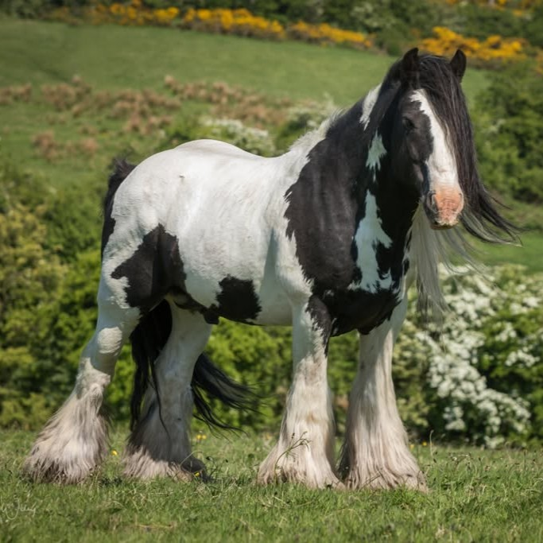
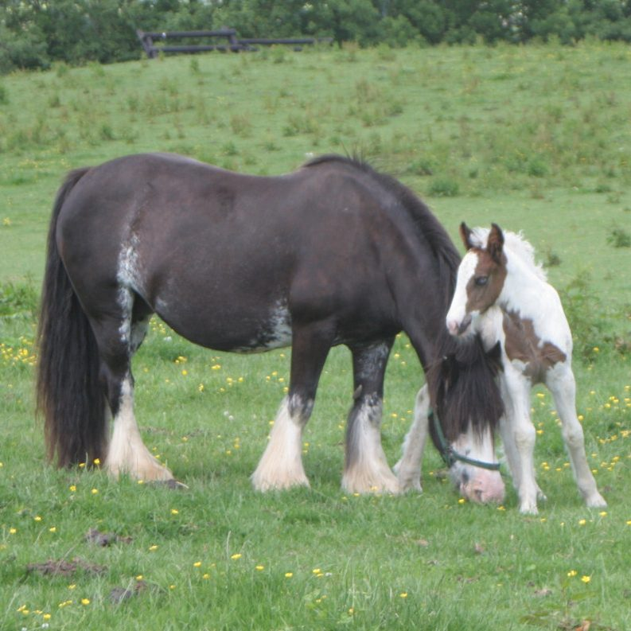

5Fleur Du Vallat
Née au Domaine Du Vallat (13). Facile sous la selle même avec les enfants, elle toise 1m44.
Voir les 5 photosOuvert aux saillies


.jpg)


Archy est le premier pilier de l'élevage Humming Cob. Choisi sur photo, ses deux yeux bleus perçants ont immédiatement retenu mon attention. Issu de la lignée Cairnview, il s'est toujours distingué par sa fiabilité et sa polyvalence. Champion de France en Qualification Loisirs Junior en 2012 et Qualifié Monté en 2015, il est avant tout un compagnon fiable et sûr en extérieur. Il n'est par contre pas fan du travail en carrière : il fera plaisir une fois, deux fois avec cœur, mais rarement davantage.
Il transmet à sa descendance une belle ossature, du crin, avec de la chance du bleu dans les yeux et ce tempérament facile qui fait toute la valeur de la race en usage loisir. Son fils Inuk et sa fille Fleur en sont aujourd'hui la démonstration : des chevaux équilibrés, tant physiquement que sous la selle.
Archy n'est plus présenté en concours depuis 2015. L'élevage reste une activité passion menée en parallèle de nos métiers : nous préférons consacrer ce temps à nos chevaux plutôt qu'aux concours.
Élevage Humming Cob
Autres descendants - Naissances extérieures

5Née au Domaine Du Vallat (13). Facile sous la selle même avec les enfants, elle toise 1m44.
Voir les 5 photos
2Né dans le Gard (30), il toise 1m40, croisé PFS. Un véritable randonneur.
Voir les 2 photos
2Né d'un croisement avec une maman Morgan. Malheureusement décédé en 2018.
Voir les 2 photos
4Né dans la Drôme, il toise 1m53 à 4 ans et est un maitre d'école pour les enfants.
Voir les 4 photosCairnview Archy est issu de l'élevage irlandais Cairnview, reconnu pour la qualité morphologique et le tempérament exemplaire de ses Irish Cobs. Leurs chevaux sont travaillés sous la selle et prouvent leur talent dans divers domaines. Son père, Llewelyn, est enregistré à l'ICS (Irish Cob Society), descendant de Mr. Morris, étalon élite de la race.

PèreCairnview Llewelyn
MèreCairnview Kessia